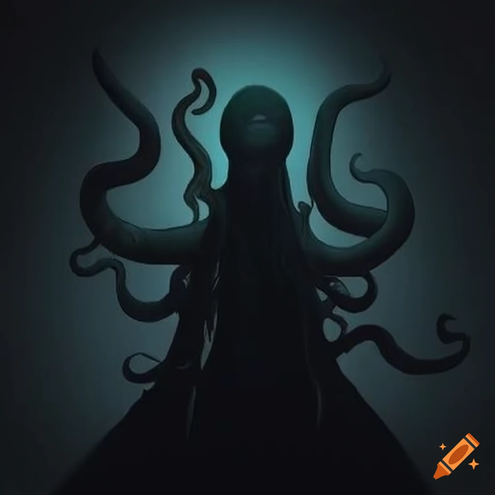

Motifs/Symbols
Couches on the Beach
The couches represent a routine and a comfort point for the men. Near the end of the story, despite travelling to a far away land, the men find comfort in their situation when the aliens replicate their couch for them.

The Aliens' Arrival
The aliens symbolize the European colonizers that arrived on Indigenous land hundreds of years ago. The bizarre features and technology of aliens reflect how the Indigenous felt when seeing Europeans for the first time.
Thematic Statement
Routines and having a place or thing to return to can provide comfort when going through tough times or being in an unfamiliar situation.
Check Your Understanding
Question 1
What do the couches on the beach represent for the three men?
Question 2
The aliens in the story symbolize which real-world group?
Question 3
Which of the following best captures the thematic statement of the story?